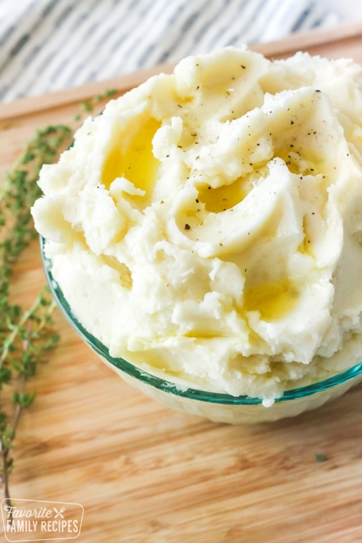

Holiday ONLY Mashed Potatoes

Recipe for great holiday ONLY mashed potatoes
These mashed potatoes are too fattening to have on a regular basis. I only make these on holidays, and everyone wonders what's in them that's makes them so rich...
INGREDIENTS (for 10 servings):
- 5 pounds red potatoes, peeled and quartered
- 1 cup heavy cream
- ½ cup butter
- Salt and pepper to taste
Directions:
- Place potatoes in a large pot with enough water to cover. Bring to a boil, and cook until fork tender, about 20 minutes.
- Drain, add butter, and mash using a potato masher, ricer or mixer.
- Gradually beat in the heavy cream. Serve hot!.
Back home